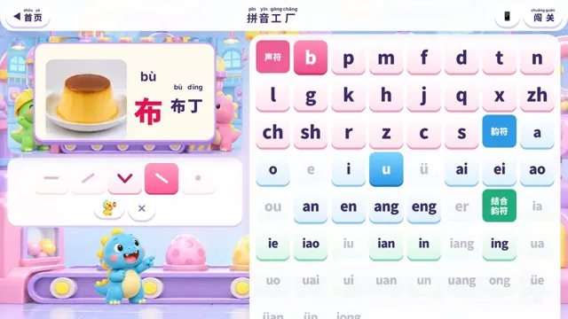
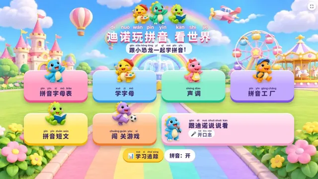
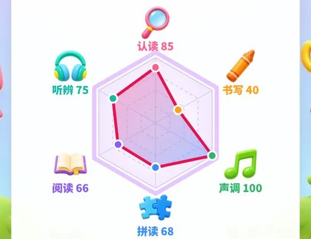

迪诺玩拼音看世界（中英双语版）

🗺️ 目录 四个部分，十八个重点
第一部分 认识迪诺乐园这套 App 是什么、里面有什么
01迪诺玩拼音看世界是什么？第二部分 学拼音六个学习单元，从字母到故事、游戏
02拼音字母表：一张表全认识03学字母：看、描、写，一个一个学04声调：高高低低一看就懂05拼音工厂：按一按，字就拼出来06拼音短文：十个绘本小故事07闯关游戏：十个游戏等你挑战08闯关游戏（一）：听、写、拼、认09闯关游戏（二）：分辨、拼字、打字、阅读第四部分 贴心设计中英切换、真人发音、横屏竖屏、学习追踪
14中英切换：学拼音，同时学一千多个英语单词15真人发音：每个音都听得清楚16手机、平板、电脑：竖拿横拿都好用17学习追踪：能力分析雷达图18交给小朋友，自然就学会迪诺玩拼音看世界是什么？

“迪诺玩拼音看世界”是一套完整的拼音学习系统：六个学习单元，加上开口念的“跟迪诺说说看”。二十三个声母、二十四个韵母、十六个整体认读音节、一千多张真实照片、十个绘本小故事、十个闯关游戏，字母和拼读都用真人录音，手机、平板、电脑竖着拿、横着拿都能用。小朋友从一个字母学起，边玩边学，用拼音看世界、说世界。 🔊
📱 App 实际画面
💬 迪诺老师和小安怎么说
小安迪诺老师，拼音字母好多个，我都记不住，怎么办？
迪诺老师别担心！我带你来玩“迪诺玩拼音看世界”。学拼音就像逛恐龙乐园一样好玩！
小安看世界？
迪诺老师对！不只学拼音，还要开口，用拼音把看到的世界说出来。
迪诺老师乐园里有七个单元：拼音字母表、学字母、声调、拼音工厂、拼音短文、闯关游戏，还有开口念的“跟迪诺说说看”。我们一站一站去看！
拼音字母表：一张表全认识

二十三个声母、二十四个韵母和十六个整体认读音节全部排在一张表上，每一格都有代表词语和真实照片。点一格，就用真人录音拼读给孩子听；也可以从头播放，整张表一路听下去。 🔊
📱 App 实际画面
💬 迪诺老师和小安怎么说
迪诺老师第一站是拼音字母表。二十三个声母、二十四个韵母，还有十六个整体认读音节，全部排在一张表上。
小安每一格都有照片呢！有鼻子、螃蟹，还有飞机！
迪诺老师点一格，就会念给你听：b、í、鼻、鼻子。也可以按“从头播放”，整张表一路念下去。
迪诺老师往下还有整体认读音节和声调，一张表全部看得到。
小安边看边听，一下子就认得了！
学字母：看、描、写，一个一个学


每个字母都有自己的学习页：先看笔顺动画，再照着红点和箭头描写，最后在空白格子自己写，系统会帮孩子打星星。每个字母还有常用词语卡，配上真实照片和拼读。 🔊
📱 App 实际画面
💬 迪诺老师和小安怎么说
迪诺老师第二站是学字母。从第一个字母开始，一个一个慢慢学。
小安它会写给我看吗？
迪诺老师会！先“看笔顺”，看它一笔一笔写出来。
迪诺老师再“描写”，照着红点和箭头描；最后“自己写”，写完还会帮你打星星。
小安我要拿三颗星！
迪诺老师每个字母还有“常用词语”：草莓、蚱蜢、木鱼、蜜蜂……整个乐园搭配了一千多张真实照片，学拼音的同时，也认识了这个世界。
声调：高高低低一看就懂

一声、二声、三声、四声和轻声，用“妈、麻、马、骂、吗”带孩子听出差别。每个声调都画出声音高低的线条，点一下就能听。 🔊
📱 App 实际画面
💬 迪诺老师和小安怎么说
迪诺老师第三站是声调。一声、二声、三声、四声，还有轻声。
小安妈、麻、马、骂、吗！
迪诺老师对！点一下就能听，还能看到声调的线条怎么走，声音高高低低一看就懂。
拼音工厂：按一按，字就拼出来

选一个声母、一个韵母，再按下声调，机器就把字做出来，用真人录音念出拼读，还显示词语和照片。拼不出字的键会自动变暗，孩子怎么按都成功。闯关模式有十张订单，全部完成就是金牌厂长。 🔊
📱 App 实际画面
💬 迪诺老师和小安怎么说
迪诺老师第四站是我最喜欢的拼音工厂！选一个声母，再选一个韵母，最后按下声调，机器就开动了。
小安我按 b，再按 u，再按四声……出来了！b、ù、布！还有布丁的照片！
迪诺老师每按一个键，都会念出它的声音；拼不出字的键会自动变暗，所以怎么按都拼得出来。
小安右上角的“闯关”是什么？
迪诺老师那是工厂的订单挑战！客人送来十张订单，你听声音把字拼出来。全部完成，就能当上金牌厂长！
拼音短文：十个绘本小故事
十个押韵的小故事，每篇都有绘本插图。画面只显示拼音，让孩子练习看拼音读故事。可以全文朗读、单句练习、词语练习，还能把一个字拆成声母、韵母和声调来听。 🔊
📱 App 实际画面
💬 迪诺老师和小安怎么说
迪诺老师第五站是拼音短文，有十个小故事，每一个都有漂亮的绘本图画。
小安有《爸爸抱抱》、《大头龙》、《章鱼吃西瓜》……我想听《大头龙》！
迪诺老师按“全文朗读”，故事一句一句念，念到哪里，画面就亮到哪里。
小安这里只有拼音，没有汉字呢。
迪诺老师因为这一站要练的就是看拼音读故事。还有单句练习、词语练习，和“单字拆解”：把一个字拆成声母、韵母和声调，一个一个听。
闯关游戏：十个游戏等你挑战
十个闯关游戏，每关九十秒，都有自己的小故事和场景。听音、认字母、写字、拼音、声调、打字、阅读，全部都练得到，还会记录最高分和星星。 🔊
📱 App 实际画面
💬 迪诺老师和小安怎么说
小安终于到游戏了！
迪诺老师这里有十个闯关游戏，每一关九十秒，听、认、写、拼，全部都玩得到。我们一关一关看！
闯关游戏（一）：听、写、拼、认

前五关练基本功：听声音找字母、动手写字母、把声母韵母和声调拼起来、听出第几声、看照片找拼音。 🔊
📱 App 实际画面
💬 迪诺老师和小安怎么说
迪诺老师第一关“听音孵蛋”：听声音，点对那颗蛋，小恐龙就孵出来。
迪诺老师第二关“火山石板写字”：火山要爆发了！把听到的字母写出来，铺出逃生的石板路。
小安这一关是练写字！
迪诺老师第三关“拼音小火车”：听声音，选出声母、韵母和声调，火车才能出发。
迪诺老师第四关“声调溜滑梯”：听听看是第几声，选对滑梯，滑进水池。
迪诺老师第五关“看图找拼音”：看照片，找出正确的拼音卡。
闯关游戏（二）：分辨、拼字、打字、阅读

后五关再进阶：分辨容易混淆的声音、找出拼得起来的组合、照着菜名一个字一个字拼、用拼音键盘打字、在句子里找出不见的字。 🔊
📱 App 实际画面
💬 迪诺老师和小安怎么说
迪诺老师第六关“双胞胎过河”：zh 和 z、sh 和 s，听起来好像，踩对石头才能过河。
小安这一关可以练耳朵！
迪诺老师第七关“拼音钓鱼”：看岸上的声母，钓起可以和它拼成字的鱼。
迪诺老师第八关“恐龙厨房”：客人点菜了，听菜名，一个字一个字选出拼音。
迪诺老师第九关“流星拼音键盘”：流星上是什么字母，就按键盘上同一个字母，保护恐龙村。
小安这样连拼音打字都学会了！
迪诺老师第十关“故事寻宝”：故事书少了一个字，听句子，把不见的字找回来。
回音山谷：听迪诺念，换你念，听回音
第七个单元“跟迪诺说说看”让孩子开口，有回音山谷、喂恐龙、声调飞行三种玩法。回音山谷分成字母、词语、句子三级：先听迪诺念，再按“我来念”录下自己的声音，山谷会把声音回给你听，再听一次迪诺，自己给星星。也可以按“全部朗读”连续听，用上一个、下一个前后切换。使用时需要允许麦克风。 🔊
📱 App 实际画面
💬 迪诺老师和小安怎么说
迪诺老师第七站是“跟迪诺说说看”，有回音山谷、喂恐龙、声调飞行三种玩法。
小安可是我只会看，不太敢念出来。
迪诺老师那就先到回音山谷！听我念一次，再按“我来念”，把你的声音录下来。
小安山谷真的把我的声音回给我了！
迪诺老师听听自己念的，再听一次我念的，比一比像不像，然后给自己星星。
迪诺老师从字母到词语、句子，都可以这样练。想一直听下去，就按“全部朗读”。
把世界说出来：用拼音说出一千多样东西

按下“把世界说出来”，App 里一千多个有照片的词语全部排进来：动物、食物、交通工具、身体、大自然、日常动作……小朋友看着真实照片，用拼音一个一个念出来。学拼音不只是认字母，而是用拼音看见世界、说出世界。 🔊
📱 App 实际画面
💬 迪诺老师和小安怎么说
小安词语只有这些吗？
迪诺老师按下“把世界说出来”，一千多张真实照片一张一张出现。
小安哇，世界上的东西我都可以用拼音念出来！
迪诺老师没错。看到什么，就说出什么，这就是用拼音看世界、说世界。
迪诺老师还可以整句整句念，把故事也说出来。
喂恐龙：看照片，说出来

九十秒的开口游戏。画面出现照片，小朋友大声说出词语，说对了恐龙就张大嘴把卡片吃掉。设备支持语音识别时会自动听；不支持时，说完听迪诺念一次，再自己按“我说对了”。 🔊
📱 App 实际画面
💬 迪诺老师和小安怎么说
迪诺老师恐龙肚子饿了！看照片，大声说出它的名字。
小安我说出来，恐龙就把卡片吃掉了！
迪诺老师九十秒看你能喂几张。说不出来可以按“提示”，听我念一次。
声调飞行：看得见的声调
小朋友说出“妈、麻、马、骂”，麦克风抓到声音的高低，画成一条黄色的线，小恐龙跟着这条线飞。照着白色虚线飞，飞得像就得到星星，还会提示声音该往上还是往下。 🔊
📱 App 实际画面
💬 迪诺老师和小安怎么说
迪诺老师声调飞行！白色的线是这个声调该走的路。
小安我说“妈”，小恐龙就照着我的声音飞起来了！
迪诺老师一声平平的，二声往上，三声先下再上，四声往下。看着线说，一下就懂。
中英切换：学拼音，同时学一千多个英语单词
首页下方有三个按钮：“中文”、“中文＋English”、“English”，点一下就切换。选“中文＋English”，画面还是中文和拼音，每张照片、每个词语下面多了英语意思，短文每一句也有英语翻译，一共一千一百多个英语单词。点英语就念英语，点照片或中文就念中文。选“English”，整个画面和说明都变成英语。学习记录三种模式共用，随时可以切换。 🔊
📱 App 实际画面
💬 迪诺老师和小安怎么说
小安迪诺老师，首页下面多了三个按钮！
迪诺老师对！点“中文加英语”，每张照片、每个词语下面，都会多出英语意思。
小安鼻子下面有英语，螃蟹下面也有英语！我点英语，它就念英语给我听！
迪诺老师点照片或中文，就念中文。一边学拼音，一边就学会一千一百多个英语单词。
迪诺老师短文的每一句也有英语翻译。
迪诺老师如果点最右边的按钮，整个画面都会变成英语。
真人发音：每个音都听得清楚

字母和拼读的声音不是机器合成的。声母、韵母、整体认读音节，还有一千三百多个带声调的音节，都是真人老师录音。拼读时先念声母，再念带声调的韵母，最后念出整个音节，例如“b、ù、布”，孩子听到的是清楚、自然的发音。 🔊
📱 App 实际画面
💬 迪诺老师和小安怎么说
小安迪诺老师，这些声音是谁念的？好清楚啊！
迪诺老师是真人老师一个一个录的！声母、韵母、整体认读音节，还有一千三百多个带声调的音节。
迪诺老师拼读的时候，先念声母，再念带声调的韵母，最后念出整个音：b、ù、布。
小安每个音都是完整的一个音，听起来好自然！
迪诺老师对，这样听到的才是最自然的发音。
手机、平板、电脑：竖拿横拿都好用


手机竖着拿是竖屏画面，横着拿就变成横屏；平板和电脑也一样，画面会跟着方向自动切换，并放大到整个屏幕。每一页都把画面留给内容，标题栏和按钮缩到最小，照片和字母看得更大。 🔊
📱 App 实际画面
💬 迪诺老师和小安怎么说
小安我家有手机，也有平板，都可以玩吗？
迪诺老师都可以！手机、平板、电脑都能用。竖着拿是竖屏，横着拿，画面就自动变成横屏。
小安横的画面好大，照片看得好清楚！
迪诺老师每一页都把空间留给内容，按钮缩得小小的，字母和照片就能放得大大的。
迪诺老师十个游戏也一样，横着玩更过瘾。
学习追踪：能力分析雷达图

孩子学了多少、哪里强哪里弱，App 会自动记录。学习总览列出学过的字母、写字星星、读过的故事和游戏次数；能力分析用雷达图呈现认读、书写、声调、拼读、阅读、听辨六种能力，并建议接下来多玩哪些游戏。记录保存在这台设备上。 🔊
📱 App 实际画面
💬 迪诺老师和小安怎么说
小安迪诺老师，我学得怎么样，看得出来吗？
迪诺老师看得出来！首页有“学习追踪”，学过几个字母、拿到几颗星、读了几个故事，全部都会记下来。
小安这个六角形是什么？
迪诺老师那是能力分析雷达图，把认读、书写、声调、拼读、阅读、听辨六种能力画出来，哪里强、哪里要加强，一看就知道。
迪诺老师它还会建议接下来多玩哪几个游戏，爸爸妈妈也能看到每个游戏的最高分和答对率。
交给小朋友，自然就学会

认字母、学写字、练声调、拼字、读故事、玩游戏，再加上开口说，一套就完整。爸爸妈妈只要把“迪诺玩拼音看世界”交给小朋友，他自然就全部都会了，也认识了全世界。 🔊
📱 App 实际画面
💬 迪诺老师和小安怎么说
小安认字母、学写字、练声调、拼字、读故事、玩游戏，还能开口说……学拼音真的太好玩了！
迪诺老师是啊！爸爸妈妈只要把“迪诺玩拼音看世界”交给小朋友，他自然就全部都会了。
小安而且我还能用拼音把世界说出来！
迪诺老师迪诺玩拼音看世界，用拼音看世界、说世界，我们乐园里见！
 我们恐龙乐园里见！
我们恐龙乐园里见！